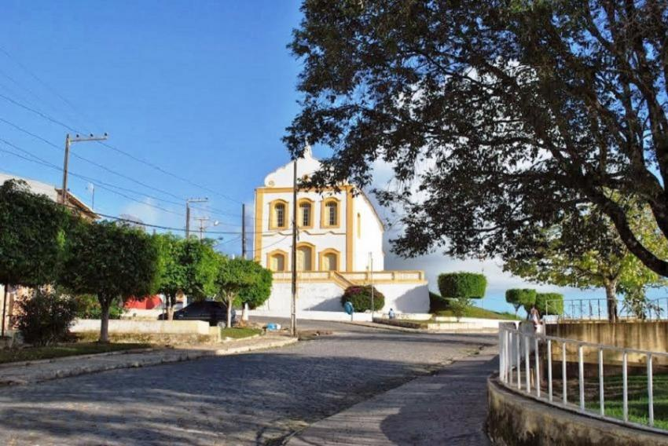

Santa Luiza do Itanhi
História
Santa Luzia do Itanhi é a povoação mais antiga de Sergipe e a sua fundação está relacionada com a chegada dos portugueses e tentativa de invasão/colonização no atual Sergipe. Chegam à região os padres jesuítas Gaspar Lourenço e seu irmão de hábito João Solenio, acompanhados por alguns colonos e um grupo de soldados no ano de 1575. Estes tinham por objetivo catequizar a população local. Nesse local os padres jesuítas fundaram uma igreja sob a invocação de São Tomé e à sua frente uma cruz com 80 palmos de altura e ainda casas para moradia. A 1ª missa celebrada foi assistida por índios que pertenciam a nação dos tupinambás.
Em 1698 a aldeia foi elevada à categoria de Vila por ordem do governador da Bahia D. João de Lencastre, com o nome de Vila Real de Santa Luzia. Decreto-Lei Estadual de nº 69 elevou a então Vila de Santa Luzia do Itanhi à categoria de cidade.
O Decreto-Lei nº 377 de 31 de Dezembro de 1943 revogado pelo de nº 533 de 07.12.1944 modifica o nome do Município para Inajaroba; este nome, por sua vez, foi mudado para Santa Luzia do Itanhi pelo Decreto-Lei Estadual nº 88 de 25 de Novembro de 1948. “Itanhi” era o nome que os indígenas davam ao rio Real, hoje mais conhecido como Crasto.
fonte: https://pt.wikipedia.org/wiki/Santa_Luzia_do_ItanhiPontos Turísticos
Praia de Mangue Seco
Mangue Seco é um charmoso vilarejo de pescadores espremido entre dois rios e o mar. Está localizado no extremo norte da Bahia bem próximo da divisa com Sergipe. É um destino muito procurado por turistas que visitam os dois estados, mas é mais fácil e mais perto chegar via Aracaju.
Dados Gerais de acordo com o IBGE
| Prefeito (a) | Adauto Dantas do Amor Cardoso |
| Site do município | https://www.ibge.gov.br/cidades-e-estados/se/santa-luzia-do-itanhy.html |
| Área territorial | 325,258 km² |
| População estimada | 14.205 pessoas |
| Densidade demográfica | 39,81 hab/km² |
| IDHM | 0,545 |
| PIB per capita | R$ 11.578,31 |